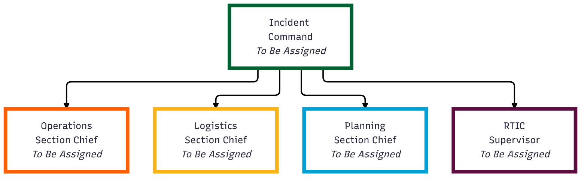

Incident Action Plan
| Incident Name | |
|---|---|
| Incident Number | |
| Operational Period | 1 |
| Prepared by | To Be Assigned, Planning Section Chief |
| Approved by | To Be Assigned, Incident Commander |
Forms
- ICS 202: Incident Objectives
- ICS 203: Organization Assignment List
- ICS 204: Assignment List
- ICS 205: Incident Radio Communications Plan
- ICS 205A: Communications List
- ICS 206: Medical Plan
- ICS 207: Incident Organization Chart
- ICS 208: Safety Message/Plan
- ICS 220: Air Operations Summary
Built from data/yaml/template/iap.yaml.
ICS 202: Incident Objectives
| Field | Value |
|---|---|
| 1. Incident Name | |
| Incident Number | |
| 2. Operational Period | to |
3. Objectives
4. Operational Period Command Emphasis
General situational awareness, safety priorities and key decisions.
5. Site Safety Plan
| Field | Value |
|---|---|
| Site Safety Plan required? | Yes / No |
| Approved Site Safety Plan(s) located at |
6. Incident Action Plan
The forms and attachments in this plan are listed in iap.yaml.
7. Prepared by
| Name | Position/Title | Signature | Date/Time |
|---|---|---|---|
| To Be Assigned | Planning Section Chief |
8. Approved by
| Name | Signature | Date/Time |
|---|---|---|
| To Be Assigned (Incident Commander) |
ICS 203: Organization Assignment List
| Field | Value |
|---|---|
| 1. Incident Name | |
| Incident Number | |
| 2. Operational Period | to |
3. Incident Commander(s) and Command Staff
| Position | Name |
|---|---|
| Incident Commander | To Be Assigned |
| Deputy | To Be Assigned |
| Safety Officer | To Be Assigned |
| Public Information Officer | To Be Assigned |
| Liaison Officer | To Be Assigned |
4. Agency/Organization Representatives
| Agency/Organization | Name |
|---|---|
5. Planning Section
| Position | Name |
|---|---|
| Chief | To Be Assigned |
| Deputy | To Be Assigned |
| Resources Unit | To Be Assigned |
| Situation Unit | To Be Assigned |
| Documentation Unit | To Be Assigned |
| Demobilization Unit | To Be Assigned |
| Technical Specialists | To Be Assigned |
6. Logistics Section
| Position | Name |
|---|---|
| Chief | To Be Assigned |
| Deputy | To Be Assigned |
| Support Branch Director | To Be Assigned |
| Supply Unit | To Be Assigned |
| Facilities Unit | To Be Assigned |
| Ground Support Unit | To Be Assigned |
| Service Branch Director | To Be Assigned |
| Communications Unit | To Be Assigned |
| Medical Unit | To Be Assigned |
| Food Unit | To Be Assigned |
7. Operations Section
| Position | Name |
|---|---|
| Chief | To Be Assigned |
| Deputy | To Be Assigned |
| Staging Area | To Be Assigned |
| Branch Director | To Be Assigned |
| Division/Group | To Be Assigned |
| Air Operations Branch Director | To Be Assigned |
8. Finance/Administration Section
| Position | Name |
|---|---|
| Chief | To Be Assigned |
| Deputy | To Be Assigned |
| Time Unit | To Be Assigned |
| Procurement Unit | To Be Assigned |
| Compensation/Claims Unit | To Be Assigned |
| Cost Unit | To Be Assigned |
9. Prepared by
| Name | Position/Title | Signature | Date/Time |
|---|---|---|---|
| To Be Assigned | Resources Unit Leader |
ICS 204: Assignment List
| Field | Value |
|---|---|
| 1. Incident Name | |
| Incident Number | |
| 2. Operational Period | to |
| 3. Branch | |
| Division | |
| Group | |
| Staging Area |
4. Operations Personnel
| Position | Name | Contact Number(s) |
|---|---|---|
| Operations Section Chief | To Be Assigned | |
| Branch Director | To Be Assigned | |
| Division/Group Supervisor | To Be Assigned |
5. Resources Assigned
| Resource Identifier | Leader | Number of Persons | Contact (phone, pager, radio frequency) | Reporting Location, Special Equipment and Supplies, Remarks, Notes, Information |
|---|---|---|---|---|
6. Work Assignments
7. Special Instructions
8. Communications
| Name/Function | Primary Contact (phone, pager, radio frequency) |
|---|---|
9. Prepared by
| Name | Position/Title | Signature | Date/Time |
|---|---|---|---|
| To Be Assigned | Resources Unit Leader |
ICS 205: Incident Radio Communications Plan
| Field | Value |
|---|---|
| 1. Incident Name | |
| Incident Number | |
| 2. Operational Period | to |
| 3. Date/Time Prepared |
4. Basic Radio Channel Use
| Zone/Group | Channel Number | Function | Channel Name/Trunked Radio System Talkgroup | Assignment | RX Frequency (N or W) | RX Tone/NAC | TX Frequency (N or W) | TX Tone/NAC | Mode (A, D or M) | Remarks |
|---|---|---|---|---|---|---|---|---|---|---|
5. Special Instructions
6. Prepared by
| Name | Position/Title | Signature | Date/Time |
|---|---|---|---|
| To Be Assigned | Communications Unit Leader |
ICS 205A: Communications List
| Field | Value |
|---|---|
| 1. Incident Name | |
| Incident Number | |
| 2. Operational Period | to |
3. Basic Local Communications Information
| Incident Assigned Position | Name (alphabetized) | Method(s) of Contact (phone, pager, cell and so on) |
|---|---|---|
4. Prepared by
| Name | Position/Title | Signature | Date/Time |
|---|---|---|---|
| To Be Assigned | Communications Unit Leader |
ICS 206: Medical Plan
| Field | Value |
|---|---|
| 1. Incident Name | |
| Incident Number | |
| 2. Operational Period | to |
3. Medical Aid Stations
| Name | Location | Contact Number(s)/Frequency | Paramedics on Site? |
|---|---|---|---|
4. Transportation
| Ambulance Service | Location | Contact Number(s)/Frequency | Level of Service (ALS/BLS) |
|---|---|---|---|
5. Hospitals
| Hospital Name | Address, Latitude and Longitude if Helipad | Contact Number(s)/Frequency | Travel Time (Air) | Travel Time (Ground) | Trauma Center (Level) | Burn Center | Helipad |
|---|---|---|---|---|---|---|---|
6. Special Medical Emergency Procedures
7. Prepared by
| Name | Position/Title | Signature | Date/Time |
|---|---|---|---|
| To Be Assigned | Medical Unit Leader |
8. Approved by
| Name | Signature | Date/Time |
|---|---|---|
| To Be Assigned (Safety Officer) |
ICS 207: Incident Organization Chart
| Field | Value |
|---|---|
| 1. Incident Name | |
| Incident Number | |
| 2. Operational Period | to |
3. Organization Chart

4. Prepared by
| Name | Position/Title | Signature | Date/Time |
|---|---|---|---|
| To Be Assigned | Resources Unit Leader |
ICS 208: Safety Message/Plan
| Field | Value |
|---|---|
| 1. Incident Name | |
| Incident Number | |
| 2. Operational Period | to |
3. Safety Message, Expanded Safety Message, Safety Plan, Site Safety Plan
4. Site Safety Plan
| Field | Value |
|---|---|
| Site Safety Plan required? | Yes / No |
| Approved Site Safety Plan(s) located at |
5. Prepared by
| Name | Position/Title | Signature | Date/Time |
|---|---|---|---|
| To Be Assigned | Safety Officer |
ICS 220: Air Operations Summary
| Field | Value |
|---|---|
| 1. Incident Name | |
| Incident Number | |
| 2. Operational Period | to |
| 3. Sunrise | |
| Sunset |
4. Remarks
Safety notes, hazards, air operations special equipment and so on.
5. Ready Alert Aircraft
| Type | Aircraft |
|---|---|
| Medivac | |
| New Incident |
6. Temporary Flight Restriction
| Field | Value |
|---|---|
| TFR number | |
| Altitude | |
| Center point (latitude, longitude) |
7. Personnel
| Position | Name | Phone |
|---|---|---|
| Air Operations Branch Director | To Be Assigned | |
| Air Support Group Supervisor | To Be Assigned | |
| Air Tactical Group Supervisor | To Be Assigned | |
| Helicopter Coordinator | To Be Assigned | |
| Fixed-Wing Coordinator | To Be Assigned |
8. Frequencies
| Use | AM | FM |
|---|---|---|
| Air/Air Fixed-Wing | ||
| Air/Air Rotary-Wing (Flight Following) | ||
| Air/Ground | ||
| Command | ||
| Deck Coordinator | ||
| Take-Off and Landing Coordinator | ||
| Air Guard |
9. Fixed-Wing Aircraft
| Aircraft | Base | Available | Start |
|---|---|---|---|
10. Helicopters
| FAA Number | Type | Make/Model | Base | Available | Start | Remarks |
|---|---|---|---|---|---|---|
11. Tasks
| Type/Function | Name | Requested by | Time | Base | Destination | Remarks |
|---|---|---|---|---|---|---|
12. Prepared by
| Name | Position/Title | Signature | Date/Time |
|---|---|---|---|
| To Be Assigned | Air Operations Branch Director |